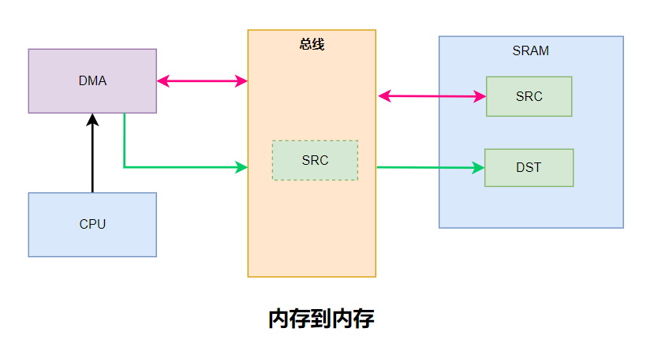
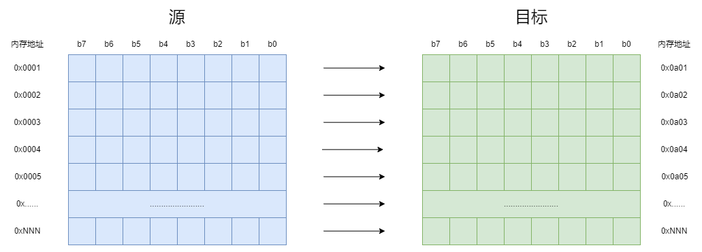
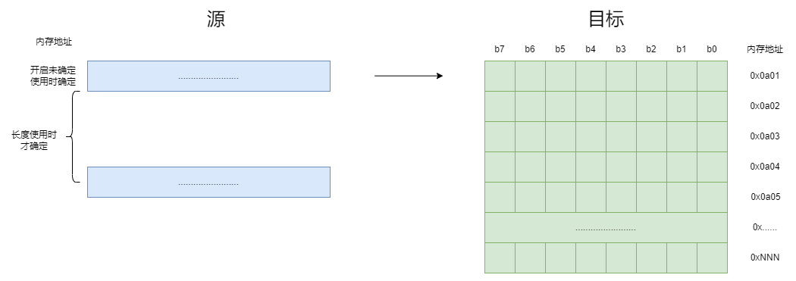

<!DOCTYPE lake>
<h2 data-lake-id="smhOh" id="smhOh"><span data-lake-id="ua459f690" id="ua459f690">学习目标</span></h2><ol list="uc81fbfa1"><li data-lake-id="ub67125a7" fid="u7bdbacd8" id="ub67125a7"><span data-lake-id="uf2566fcc" id="uf2566fcc">理解DMA数据传输过程</span></li><li data-lake-id="uf797548c" fid="u7bdbacd8" id="uf797548c"><span data-lake-id="u40110edb" id="u40110edb">掌握DMA的初始化流程</span></li><li data-lake-id="ud979d953" fid="u7bdbacd8" id="ud979d953"><span data-lake-id="ue366e623" id="ue366e623">理解源和目标的配置</span></li><li data-lake-id="u8adcb8e0" fid="u7bdbacd8" id="u8adcb8e0"><span data-lake-id="ud93b9f29" id="ud93b9f29">理解数据传输特点</span></li><li data-lake-id="ubff3ba5b" fid="u7bdbacd8" id="ubff3ba5b"><span data-lake-id="uf9b571ff" id="uf9b571ff">能够动态配置源数据</span></li><li data-lake-id="u5f9b7123" fid="u7bdbacd8" id="u5f9b7123"><span data-lake-id="ub4ab3070" id="ub4ab3070">能够实现DMA中断</span></li></ol><h2 data-lake-id="DbauK" id="DbauK"><span data-lake-id="uc9c5a808" id="uc9c5a808">学习内容</span></h2><h3 data-lake-id="A5LbN" id="A5LbN"><span data-lake-id="ucb33f208" id="ucb33f208">需求</span></h3><span class="yuque-card-unsupported">[codeblock]</span><p data-lake-id="uc3670410" id="uc3670410"><span data-lake-id="u01c49c57" id="u01c49c57">将src这个数组的值，赋值到dst这个数组中，不可以采取直接赋值的方式，需要通过DMA将数据进行传递。</span></p><h3 data-lake-id="GSOTS" id="GSOTS"><span data-lake-id="u67bdae50" id="u67bdae50">数据交互流程</span></h3><p data-lake-id="uaec13014" id="uaec13014"></p><ol list="ufb314232"><li data-lake-id="u1024676a" fid="u7c5d6f51" id="u1024676a"><span data-lake-id="u1820fdf5" id="u1820fdf5">CPU配置好DMA</span></li><li data-lake-id="u0d224037" fid="u7c5d6f51" id="u0d224037"><span data-lake-id="u7c5ccf8a" id="u7c5ccf8a">CPU通知DMA干活</span></li><li data-lake-id="u5b009ea0" fid="u7c5d6f51" id="u5b009ea0"><span data-lake-id="ub271bc89" id="ub271bc89">DMA请求源数据</span></li><li data-lake-id="ud28212cd" fid="u7c5d6f51" id="ud28212cd"><span data-lake-id="u14a7cd74" id="u14a7cd74">DMA获取源数据</span></li><li data-lake-id="ua17cb0fe" fid="u7c5d6f51" id="ua17cb0fe"><span data-lake-id="u93743e83" id="u93743e83">DMA将获取的源数据交给目标</span></li></ol><h3 data-lake-id="ayYkU" id="ayYkU"><span data-lake-id="u77ffb9bc" id="u77ffb9bc">开发流程</span></h3><h4 data-lake-id="Ee1EY" id="Ee1EY"><span data-lake-id="ua943bbf2" id="ua943bbf2">依赖引入</span></h4><p data-lake-id="u918a962f" id="u918a962f"><span data-lake-id="u2f1e05a6" id="u2f1e05a6">添加标准库中的</span><code data-lake-id="ue04edabb" id="ue04edabb"><span data-lake-id="u184b10d5" id="u184b10d5">gd32f4xx_dma.c</span></code><span data-lake-id="u0dbaf24d" id="u0dbaf24d">文件</span></p><h4 data-lake-id="KGhto" id="KGhto"><span data-lake-id="u2c3a0671" id="u2c3a0671">DMA初始</span></h4><span class="yuque-card-unsupported">[codeblock]</span><ol list="udd59d2ac"><li data-lake-id="u35b29cdc" fid="u75adf601" id="u35b29cdc"><span data-lake-id="ub017c018" id="ub017c018">配置时钟</span></li><li data-lake-id="u71358cbc" fid="u75adf601" id="u71358cbc"><span data-lake-id="u3c82a80d" id="u3c82a80d">初始化dma通道</span></li></ol><h4 data-lake-id="ZK7mP" id="ZK7mP"><span data-lake-id="u4cf17390" id="u4cf17390">DMA传输请求</span></h4><span class="yuque-card-unsupported">[codeblock]</span><ul list="ufb48943b"><li data-lake-id="uf76445ef" fid="u48aff950" id="uf76445ef"><span data-lake-id="u791a8cd2" id="u791a8cd2">dma_channel_enable： 请求dma数据传输</span></li><li data-lake-id="u23a03449" fid="u48aff950" id="u23a03449"><span data-lake-id="u957356dd" id="u957356dd">DMA_FLAG_FTF：为传输完成标记</span></li></ul><h4 data-lake-id="FllNb" id="FllNb"><span data-lake-id="u6b4774e6" id="u6b4774e6">完整代码</span></h4><span class="yuque-card-unsupported">[codeblock]</span><h3 data-lake-id="EFWCI" id="EFWCI"><span data-lake-id="u3c6d091d" id="u3c6d091d">关心的内容</span></h3><span class="yuque-card-unsupported">[codeblock]</span><ul list="u2f5e7d04"><li data-lake-id="u49c2b3ae" fid="u6558784b" id="u49c2b3ae"><span data-lake-id="u0e6e4c65" id="u0e6e4c65">哪个dma：DMA0或者DMA1</span></li><li data-lake-id="u710f51b8" fid="u6558784b" id="u710f51b8"><span data-lake-id="u1afe264b" id="u1afe264b">dma的哪个通道：ch0到ch7</span></li><li data-lake-id="u6e8c6491" fid="u6558784b" id="u6e8c6491"><span data-lake-id="u4cb28847" id="u4cb28847">传输方向是什么：内存到内存，内存到外设，外设到内存</span></li><li data-lake-id="ud4d081a7" fid="u6558784b" id="ud4d081a7"><span data-lake-id="u85ace0be" id="u85ace0be">源地址是多少？源的数据长度是多少（几个）？源的数据宽度是多少（几个bit，8/16/32）？</span></li><li data-lake-id="u25fecb22" fid="u6558784b" id="u25fecb22"><span data-lake-id="u1df82e89" id="u1df82e89">目标地址是什么？</span></li><li data-lake-id="u8eaf847c" fid="u6558784b" id="u8eaf847c"><span data-lake-id="u902b96e7" id="u902b96e7">从源地址向目标地址传输数据时，源地址的指针是否需要增长。</span></li><li data-lake-id="u259eb62e" fid="u6558784b" id="u259eb62e"><span data-lake-id="uf0eed1b1" id="uf0eed1b1">从源地址向目标地址传输数据时，目标地址的指针是否需要增长。</span></li></ul><h3 data-lake-id="wzdVl" id="wzdVl"><span data-lake-id="u3379f3c7" id="u3379f3c7">数据传输理解</span></h3><p data-lake-id="u9cdbc769" id="u9cdbc769"></p><h4 data-lake-id="xUihm" id="xUihm"><span data-lake-id="ue50adfa6" id="ue50adfa6">源地址和目标地址</span></h4><p data-lake-id="u7811170d" id="u7811170d"><span data-lake-id="u43092e0b" id="u43092e0b">源地址和目标地址都是提前配置好的，当传输时，就会从源地址将数据传递给目标地址。</span></p><h4 data-lake-id="rQlRR" id="rQlRR"><span data-lake-id="uaf397a67" id="uaf397a67">自增长</span></h4><p data-lake-id="u8da0164c" id="u8da0164c"><span data-lake-id="ua3c0bf15" id="ua3c0bf15">每传输一个字节数据，地址是否需要增长。这里包含了源地址是否需要增长，也包含了目标地址是否需要增长。</span></p><h4 data-lake-id="rOgbp" id="rOgbp"><span data-lake-id="u66feb475" id="u66feb475">数据宽度</span></h4><p data-lake-id="ub5a98651" id="ub5a98651"><span data-lake-id="u90892b02" id="u90892b02">数据宽度表示一次传递多上个bit</span></p><h4 data-lake-id="kftka" id="kftka"><span data-lake-id="uf5ef318d" id="uf5ef318d">数据长度</span></h4><p data-lake-id="ua905e8b5" id="ua905e8b5"><span data-lake-id="u9184edf4" id="u9184edf4">传输了多少个数据宽度的数据。</span></p><h3 data-lake-id="DA16j" id="DA16j"><span data-lake-id="uc4efdfb3" id="uc4efdfb3">源的数据未定</span></h3><p data-lake-id="u9bad9310" id="u9bad9310"><span data-lake-id="u753c257f" id="u753c257f">这里主要指的是在配置DMA的源和目标的时候，我们无法给出一个具体的源地址和源的数据长度。</span></p><p data-lake-id="u587a0dcf" id="u587a0dcf"></p><p data-lake-id="uf954aeea" id="uf954aeea"><span data-lake-id="u13f3f124" id="u13f3f124">通常我们要解决的也是初始化和数据传输请求。</span></p><h4 data-lake-id="l6KXg" id="l6KXg"><span data-lake-id="ud4c9f3f1" id="ud4c9f3f1">DMA初始化</span></h4><span class="yuque-card-unsupported">[codeblock]</span><p data-lake-id="ua825f767" id="ua825f767"><span data-lake-id="u05f0678f" id="u05f0678f">初始化时，不再初始化源地址和要传输的长度。</span></p><h4 data-lake-id="A9RDs" id="A9RDs"><span data-lake-id="u8e840213" id="u8e840213">DMA数据传输请求</span></h4><span class="yuque-card-unsupported">[codeblock]</span><p data-lake-id="u1a4982b6" id="u1a4982b6"><span data-lake-id="uc54e566f" id="uc54e566f">请求数据传输前，进行动态配置：</span></p><ul list="ub7de956d"><li data-lake-id="u1dafbc3f" fid="u18996545" id="u1dafbc3f"><span data-lake-id="ua65247a1" id="ua65247a1">在此需要注意的是，要分清楚当前是否是调用源的地址配置</span></li></ul><h4 data-lake-id="ROUzX" id="ROUzX"><span data-lake-id="u656f937f" id="u656f937f">完整代码</span></h4><span class="yuque-card-unsupported">[codeblock]</span><h3 data-lake-id="ZBJS5" id="ZBJS5"><span data-lake-id="u5934969c" id="u5934969c">DMA中断</span></h3><p data-lake-id="ub6ce584d" id="ub6ce584d"><span data-lake-id="uccc57c21" id="uccc57c21">通常，dma数据传输完成，我们也是可以知道的。可以通过中断的方式获取。</span></p><h4 data-lake-id="KFYdv" id="KFYdv"><span data-lake-id="u2a2c019d" id="u2a2c019d">开启中断</span></h4><span class="yuque-card-unsupported">[codeblock]</span><ul list="u4daaa012"><li data-lake-id="ud4d26188" fid="ue8d30908" id="ud4d26188"><span data-lake-id="udad6117d" id="udad6117d">DMA_INT_FTF： 表示中断数据传输完成标记</span></li></ul><h4 data-lake-id="EDOU9" id="EDOU9"><span data-lake-id="u9b3bb34c" id="u9b3bb34c">中断函数实现</span></h4><span class="yuque-card-unsupported">[codeblock]</span><ul list="u549a3fac"><li data-lake-id="ue3a40d71" fid="uad21a0f3" id="ue3a40d71"><span data-lake-id="u720b386c" id="u720b386c">DMA_INT_FLAG_FTF： 表示中断传输完成标记，需要在标记触发时做业务逻辑</span></li><li data-lake-id="u904f7ab2" fid="uad21a0f3" id="u904f7ab2"><span data-lake-id="udec2f19c" id="udec2f19c">同时，需要配合寄存器，清除标记</span></li></ul><h4 data-lake-id="bo4Fk" id="bo4Fk"><span data-lake-id="u3b0c16ec" id="u3b0c16ec">完整代码</span></h4><span class="yuque-card-unsupported">[codeblock]</span><h2 data-lake-id="nJtBR" id="nJtBR"><span data-lake-id="u9ed0b833" id="u9ed0b833">练习</span></h2><ol list="ubc0409df"><li data-lake-id="u162d15c2" fid="u37edbef3" id="u162d15c2"><span data-lake-id="ubd615b8a" id="ubd615b8a">实现内存到内存数据传递。</span></li></ol>